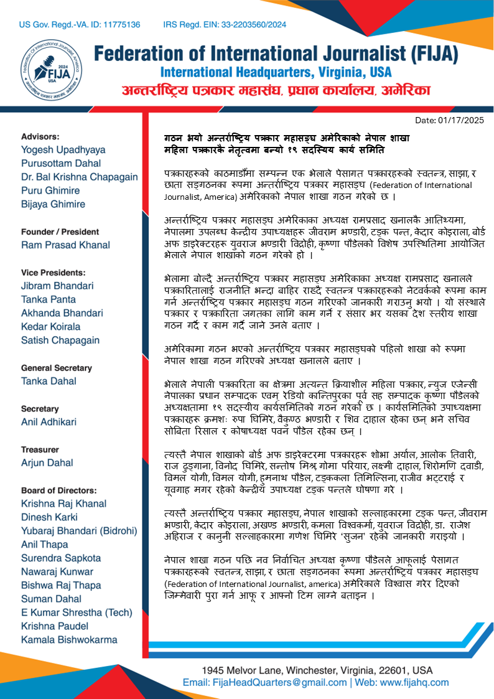
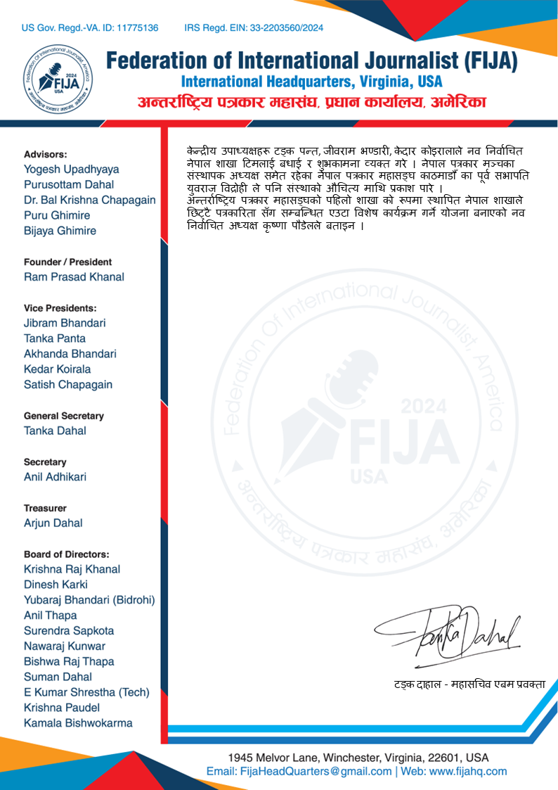
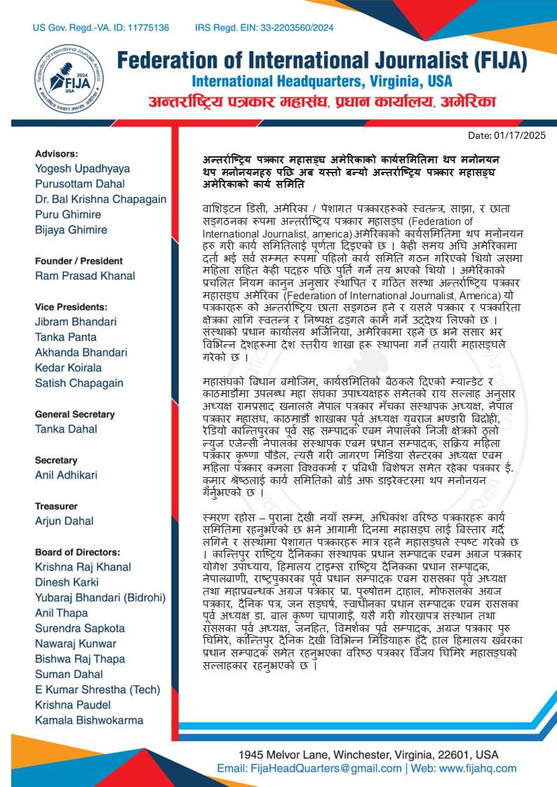
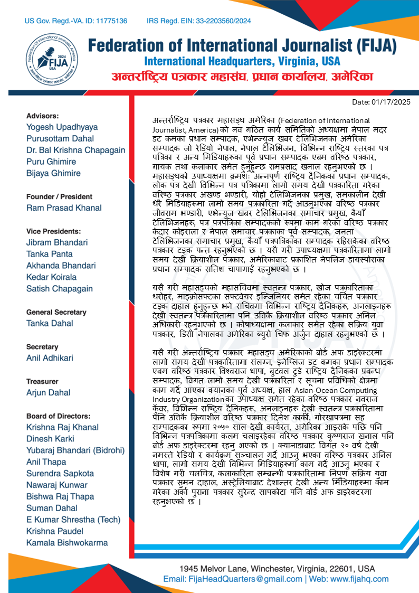
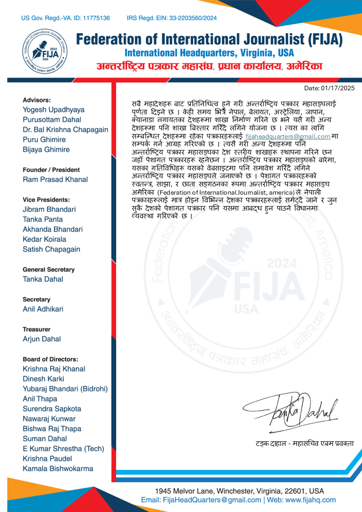
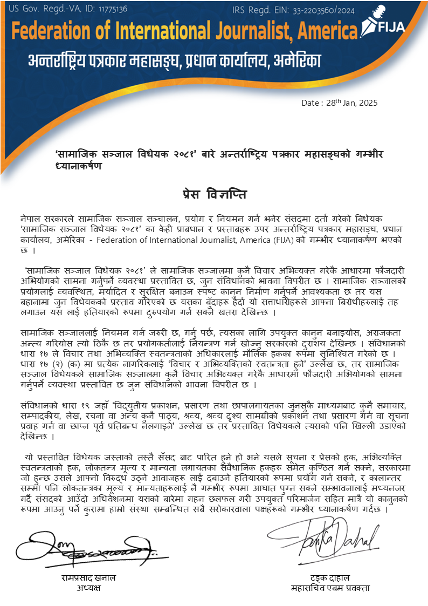
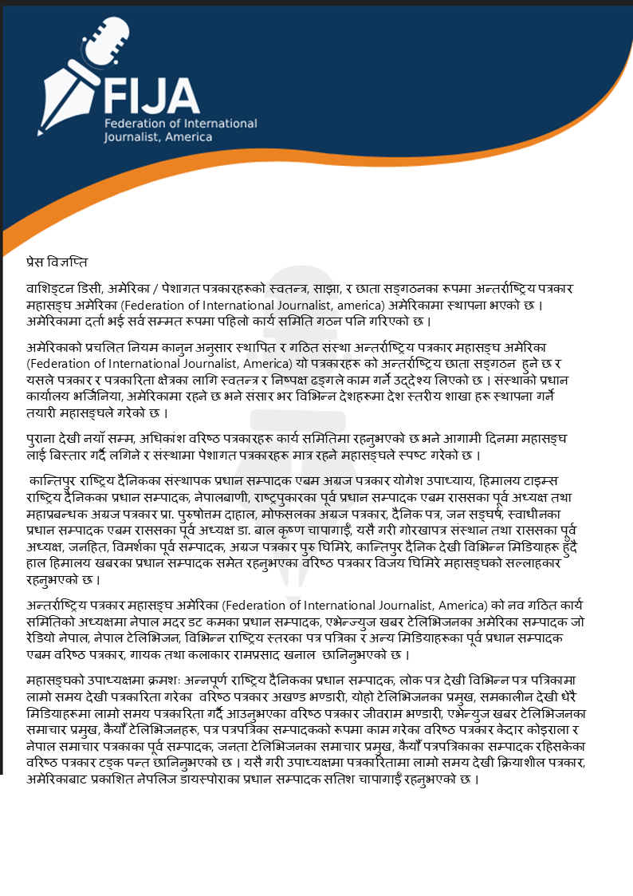
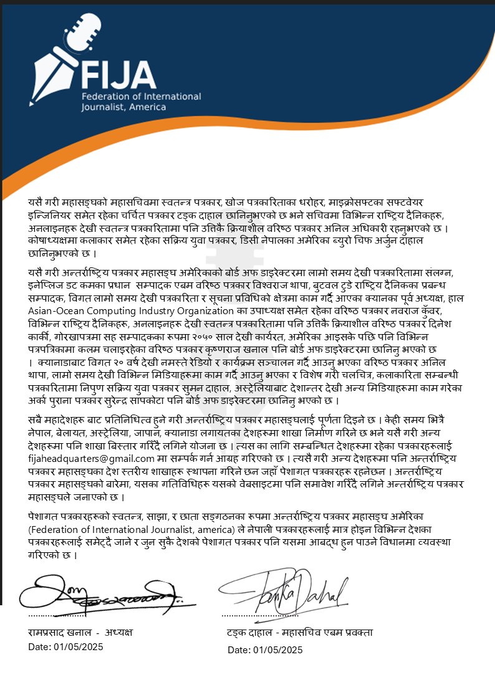

Press Release:


FIJA Press Release
गठन भयो अन्तर्राष्ट्रिय पत्रकार महासङ्घ अमेरिकाको नेपाल शाखा
महिला पत्रकारकै नेतृत्वमा बन्यो १९ सदस्यिय कार्य समिति
पत्रकारहरूको काठमाडौँमा सम्पन्न एक भेलाले पेसागत पत्रकारहरूको स्वतन्त्र, साझा, र छाता सङ्गठनका रूपमा अन्तर्राष्ट्रिय पत्रकार महासङ्घ (Federation of International Journalist, america) अमेरिकाको नेपाल शाखा गठन गरेको छ ।
अन्तर्राष्ट्रिय पत्रकार महासङ्घ अमेरिकाका अध्यक्ष रामप्रसाद खनालकै आतिथ्यमा, नेपालमा उपलब्ध केन्द्रीय उपाध्यक्षहरू जीवराम भण्डारी, टङ्क पन्त, केदार कोइराला, बोर्ड अफ डाइरेक्टरहरू युवराज भण्डारी विद्रोही, कृष्णा पौडेलको विशेष उपस्थितिमा आयोजित भेलाले नेपाल शाखाको गठन गरेको हो ।
भेलामा बोल्दै अन्तर्राष्ट्रिय पत्रकार महासङ्घ अमेरिकाका अध्यक्ष रामप्रसाद खनालले पत्रकारितालाई राजनीति भन्दा बाहिर राख्दै स्वतन्त्र पत्रकारहरूको नेटवर्कको रूपमा काम गर्न अन्तर्राष्ट्रिय पत्रकार महासङ्घ गठन गरिएको जानकारी गराउनु भयो । यो संस्थाले पत्रकार र पत्रकारिता जगतका लागि काम गर्ने र संसार भर यसका देश स्तरीय शाखा गठन गर्दै र काम गर्दै जाने उनले बताए ।
अमेरिकामा गठन भएको अन्तर्राष्ट्रिय पत्रकार महासङ्घको पहिलो शाखा को रूपमा नेपाल शाखा गठन गरिएको अध्यक्ष खनालले बताए ।
भेलाले नेपाली पत्रकारिता का क्षेत्रमा अत्यन्त क्रियाशील महिला पत्रकार, न्युज एजेन्सी नेपालका प्रधान सम्पादक एवम् रेडियो कान्तिपुरका पूर्व सह सम्पादक कृष्णा पौडेलको अध्यक्षतामा १९ सदस्यीय कार्यसमितिको गठन गरेको छ । कार्यसमितिको उपाध्यक्षमा पत्रकारहरू क्रमशः रुपा घिमिरे, वैकुण्ठ भण्डारी र शिव दाहाल रहेका छन् भने सचिव सोबिता रिसाल र कोषाध्यक्ष पवन पौडेल रहेका छन् ।
त्यस्तै नेपाल शाखाको बोर्ड अफ डाइरेक्टरमा पत्रकारहरू शोभा अर्याल, आलोक तिवारी, राज ढुङ्गाना, विनोद घिमिरे, सन्तोष मिश्र, गोमा परियार, लक्ष्मी दाहाल, शिरोमणि दवाडी, विमल योगी, विमल योगी, हुमनाथ पौडेल, टङ्ककला तिमिल्सिना, राजीव भट्टराई र यूवगाह मगर रहेको केन्द्रीय उपाध्यक्ष टङ्क पन्तले घोषणा गरे ।
त्यस्तै अन्तर्राष्ट्रिय पत्रकार महासङ्घ, नेपाल शाखाको सल्लाहकारमा टङ्क पन्त, जीवराम भण्डारी, केदार कोइराला, अखण्ड भण्डारी, कमला विश्वकर्मा, युवराज विद्रोही, डा. राजेश अहिराज र कानुनी सल्लाहकारमा गणेश घिमिरे ‘सुजन’ रहेको जानकारी गराइयो ।
नेपाल शाखा गठन पछि नव निर्वाचित अध्यक्ष कृष्णा पौडेलले आफूलाई पेसागत पत्रकारहरूको स्वतन्त्र, साझा, र छाता सङ्गठनका रूपमा अन्तर्राष्ट्रिय पत्रकार महासङ्घ (Federation of International Journalist, america) अमेरिकाले विश्वास गरेर दिएको जिम्मेवारी पुरा गर्न आफू र आफ्नो टिम लाग्ने बताइन ।
केन्द्रीय उपाध्यक्षहरू टङ्क पन्त, जीवराम भण्डारी, केदार कोइरालाले नव निर्वाचित नेपाल शाखा टिमलाई बधाई र शुभकामना व्यक्त गरे । नेपाल पत्रकार मञ्चका संस्थापक अध्यक्ष समेत रहेका नेपाल पत्रकार महासङ्घ काठमाडौँ का पूर्व सभापति युवराज विद्रोही ले पनि संस्थाको औचित्य माथि प्रकाश पारे ।
अन्तर्राष्ट्रिय पत्रकार महासङ्घको पहिलो शाखा को रूपमा स्थापित नेपाल शाखाले छिट्टै पत्रकारिता सँग सम्बन्धित एउटा विशेष कार्यक्रम गर्ने योजना बनाएको नव निर्वाचित अध्यक्ष कृष्णा पौडेलले बताइन ।
Press Release:



FIJA Press Release
अन्तर्राष्ट्रिय पत्रकार महासङ्घ अमेरिकाको कार्यसमितिमा थप मनोनयन
थप मनोनयनहरु पछि अब यस्तो बन्यो अन्तर्राष्ट्रिय पत्रकार महासङ्घ अमेरिकाको कार्य समिति
वाशिङ्टन डिसी, अमेरिका / पेशागत पत्रकारहरूको स्वतन्त्र, साझा, र छाता सङ्गठनका रूपमा अन्तर्राष्ट्रिय पत्रकार महासङ्घ (Federation of International Journalist, america) अमेरिकाको कार्यसमितिमा थप मनोनयन हरु गरी कार्य समितिलाई पूर्णता दिइएको छ । केही समय अघि अमेरिकामा दर्ता भई सर्व सम्मत रूपमा पहिलो कार्य समिति गठन गरिएको थियो जसमा महिला सहित केही पदहरु पछि पुर्ति गर्ने तय भएको थियो । अमेरिकाको प्रचलित नियम कानुन अनुसार स्थापित र गठित संस्था अन्तर्राष्ट्रिय पत्रकार महासङ्घ अमेरिका (Federation of International Journalist, America) यो पत्रकारहरू को अन्तर्राष्ट्रिय छाता सङ्गठन हुने र यसले पत्रकार र पत्रकारिता क्षेत्रका लागि स्वतन्त्र र निष्पक्ष ढङ्गले काम गर्ने उद्देश्य लिएको छ । संस्थाको प्रधान कार्यालय भर्जिनिया, अमेरिकामा रहने छ भने संसार भर विभिन्न देशहरूमा देश स्तरीय शाखा हरू स्थापना गर्ने तयारी महासङ्घले गरेको छ ।
महासंघको बिधान बमोजिम, कार्यसमितिको बैठकले दिएको म्यान्डेट र काठमाडौंमा उपलब्ध महा संघका उपाध्यक्षहरु समेतको राय सल्लाह अनुसार अध्यक्ष रामप्रसाद खनालले नेपाल पत्रकार मँचका संस्थापक अध्यक्ष, नेपाल पत्रकार महासंघ, काठमाडौं शाखाका पूर्व अध्यक्ष युबराज भण्डारी बिद्रोही, रेडियो कान्तिपुरका पूर्व सह सम्पादक एबम नेपालको निजी क्षेत्रको ठुलो न्युज एजेन्सी नेपालका संस्थापक एबम प्रधान सम्पादक, सक्रिय महिला पत्रकार कृष्णा पौडेल, त्यसै गरी जागरण मिडिया सेन्टरका अध्यक्ष एबम महिला पत्रकार कमला विश्वकर्मा र प्रबिधी बिशेषज्ञ समेत रहेका पत्रकार ई. कुमार श्रेष्ठलाई कार्य समितिको बोर्ड अफ डाइरेक्टरमा थप मनोनयन गर्नुभएको छ ।
स्मरण रहोस – पुराना देखी नयाँ सम्म, अधिकांश वरिष्ठ पत्रकारहरू कार्य समितिमा रहनुभएको छ भने आगामी दिनमा महासङ्घ लाई बिस्तार गर्दै लगिने र संस्थामा पेशागत पत्रकारहरू मात्र रहने महासङ्घले स्पष्ट गरेको छ । कान्तिपुर राष्ट्रिय दैनिकका संस्थापक प्रधान सम्पादक एबम अग्रज पत्रकार योगेश उपाध्याय, हिमालय टाइम्स राष्ट्रिय दैनिकका प्रधान सम्पादक, नेपालबाणी, राष्ट्रपुकारका पूर्व प्रधान सम्पादक एबम राससका पूर्व अध्यक्ष तथा महाप्रबन्धक अग्रज पत्रकार प्रा. पुरुषोत्तम दाहाल, मोफसलका अग्रज पत्रकार, दैनिक पत्र, जन सङ्घर्ष, स्वाधीनका प्रधान सम्पादक एबम राससका पूर्व अध्यक्ष डा. बाल कृष्ण चापागाईँ, यसै गरी गोरखापत्र संस्थान तथा राससका पूर्व अध्यक्ष, जनहित, विमर्शका पूर्व सम्पादक, अग्रज पत्रकार पुरु घिमिरे, कान्तिपुर दैनिक देखी विभिन्न मिडियाहरू हुँदै हाल हिमालय खबरका प्रधान सम्पादक समेत रहनुभएका वरिष्ठ पत्रकार विजय घिमिरे महासङ्घको सल्लाहकार रहनुभएको छ ।
अन्तर्राष्ट्रिय पत्रकार महासङ्घ अमेरिका (Federation of International Journalist, America) को नव गठित कार्य समितिको अध्यक्षमा नेपाल मदर डट कमका प्रधान सम्पादक, एभेन्ज्युज खबर टेलिभिजनका अमेरिका सम्पादक जो रेडियो नेपाल, नेपाल टेलिभिजन, विभिन्न राष्ट्रिय स्तरका पत्र पत्रिका र अन्य मिडियाहरूका पूर्व प्रधान सम्पादक एबम वरिष्ठ पत्रकार, गायक तथा कलाकार समेत हुनुहुन्छ रामप्रसाद खनाल रहनुभएको छ । महासङ्घको उपाध्यक्षमा क्रमशः अन्नपूर्ण राष्ट्रिय दैनिकका प्रधान सम्पादक, लोक पत्र देखी विभिन्न पत्र पत्रिकामा लामो समय देखी पत्रकारिता गरेका वरिष्ठ पत्रकार अखण्ड भण्डारी, योहो टेलिभिजनका प्रमुख, समकालीन देखी धेरै मिडियाहरूमा लामो समय पत्रकारिता गर्दै आउनुभएका वरिष्ठ पत्रकार जीवराम भण्डारी, एभेन्युज खबर टेलिभिजनका समाचार प्रमुख, कैयौँ टेलिभिजनहरू, पत्र पत्रपत्रिका सम्पादकको रूपमा काम गरेका वरिष्ठ पत्रकार केदार कोइराला र नेपाल समाचार पत्रकाका पूर्व सम्पादक, जनता टेलिभिजनका समाचार प्रमुख, कैयौँ पत्रपत्रिकाका सम्पादक रहिसकेका वरिष्ठ पत्रकार टङ्क पन्त रहनुभएको छ । यसै गरी उपाध्यक्षमा पत्रकारितामा लामो समय देखी क्रियाशील पत्रकार, अमेरिकाबाट प्रकाशित नेपलिज डायस्पोराका प्रधान सम्पादक सतिश चापागाईँ रहनुभएको छ ।
यसै गरी महासङ्घको महासचिवमा स्वतन्त्र पत्रकार, खोज पत्रकारिताका धरोहर, माइक्रोसफ्टका सफ्टवेयर इन्जिनियर समेत रहेका चर्चित पत्रकार टङ्क दाहाल हुनुहुन्छ भने सचिवमा विभिन्न राष्ट्रिय दैनिकहरू, अनलाइनहरू देखी स्वतन्त्र पत्रकारितामा पनि उत्तिकै क्रियाशील वरिष्ठ पत्रकार अनिल अधिकारी रहनुभएको छ । कोषाध्यक्षमा कलाकार समेत रहेका सक्रिय युवा पत्रकार, डिसी नेपालका अमेरिका ब्युरो चिफ अर्जुन दाहाल रहनुभएको छ ।
यसै गरी अन्तर्राष्ट्रिय पत्रकार महासङ्घ अमेरिकाको बोर्ड अफ डाइरेक्टरमा लामो समय देखी पत्रकारितामा संलग्न, इनेप्लिज डट कमका प्रधान सम्पादक एबम वरिष्ठ पत्रकार विश्वराज थापा, बुटवल टुडे राष्ट्रिय दैनिकका प्रबन्ध सम्पादक, विगत लामो समय देखी पत्रकारिता र सूचना प्रविधिको क्षेत्रमा काम गर्दै आएका क्यानका पूर्व अध्यक्ष, हाल Asian-Ocean Computing Industry Organization का उपाध्यक्ष समेत रहेका वरिष्ठ पत्रकार नवराज कुँवर, विभिन्न राष्ट्रिय दैनिकहरू, अनलाइनहरू देखी स्वतन्त्र पत्रकारितामा पनि उत्तिकै क्रियाशील वरिष्ठ पत्रकार दिनेश कार्की, गोरखापत्रमा सह सम्पादकका रूपमा २०५० साल देखी कार्यरत, अमेरिका आइसके पछि पनि विभिन्न पत्रपत्रिकामा कलम चलाइरहेका वरिष्ठ पत्रकार कृष्णराज खनाल पनि बोर्ड अफ डाइरेक्टरमा रहनु भएको छ । क्यानाडाबाट विगत २० वर्ष देखी नमस्ते रेडियो र कार्यक्रम सञ्चालन गर्दै आउनु भएका वरिष्ठ पत्रकार अनिल थापा, लामो समय देखी विभिन्न मिडियाहरूमा काम गर्दै आउनु भएका र विशेष गरी चलचित्र, कलाकारिता सम्बन्धी पत्रकारितामा निपुण सक्रिय युवा पत्रकार सुमन दाहाल, अस्ट्रेलियाबाट देशान्तर देखी अन्य मिडियाहरूमा काम गरेका अर्का पुराना पत्रकार सुरेन्द्र सापकोटा पनि बोर्ड अफ डाइरेक्टरमा रहनुभएको छ । सबै महादेशहरू बाट प्रतिनिधित्व हुने गरी अन्तर्राष्ट्रिय पत्रकार महासङ्घलाई पूर्णता दिइने छ । केही समय भित्रै नेपाल, बेलायत, अस्ट्रेलिया, जापान, क्यानाडा लगायतका देशहरूमा शाखा निर्माण गरिने छ भने यसै गरी अन्य देशहरूमा पनि शाखा बिस्तार गरिँदै लगिने योजना छ । त्यस का लागि सम्बन्धित देशहरूमा रहेका पत्रकारहरूलाई fijaheadquarters@gmail.com मा सम्पर्क गर्न आग्रह गरिएको छ । त्यसै गरी अन्य देशहरूमा पनि अन्तर्राष्ट्रिय पत्रकार महासङ्घका देश स्तरीय शाखाहरू स्थापना गरिने छन जहाँ पेशागत पत्रकारहरू रहनेछन । अन्तर्राष्ट्रिय पत्रकार महासङ्घको बारेमा, यसका गतिविधिहरू यसको वेबसाइटमा पनि समावेश गरिँदै लगिने अन्तर्राष्ट्रिय पत्रकार महासङ्घले जनाएको छ । पेशागत पत्रकारहरूको स्वतन्त्र, साझा, र छाता सङ्गठनका रूपमा अन्तर्राष्ट्रिय पत्रकार महासङ्घ अमेरिका (Federation of International Journalist, america) ले नेपाली पत्रकारहरूलाई मात्र होइन विभिन्न देशका पत्रकारहरूलाई समेट्दै जाने र जुन सुकै देशको पेशागत पत्रकार पनि यसमा आबद्ध हुन पाउने विधानमा व्यवस्था गरिएको छ ।
Press Release:



FIJA Press Release
प्रेस विज्ञप्ति
वाशिङ्टन डिसी, अमेरिका / पेशागत पत्रकारहरूको स्वतन्त्र, साझा, र छाता सङ्गठनका रूपमा अन्तर्राष्ट्रिय पत्रकार महासङ्घ अमेरिका (Federation of International Journalist, america) अमेरिकामा स्थापना भएको छ । अमेरिकामा दर्ता भई सर्व सम्मत रूपमा पहिलो कार्य समिति गठन पनि गरिएको छ ।
अमेरिकाको प्रचलित नियम कानुन अनुसार स्थापित र गठित संस्था अन्तर्राष्ट्रिय पत्रकार महासङ्घ अमेरिका (Federation of International Journalist, America) यो पत्रकारहरू को अन्तर्राष्ट्रिय छाता सङ्गठन हुने छ र यसले पत्रकार र पत्रकारिता क्षेत्रका लागि स्वतन्त्र र निष्पक्ष ढङ्गले काम गर्ने उद्देश्य लिएको छ । संस्थाको प्रधान कार्यालय भर्जिनिया, अमेरिकामा रहने छ भने संसार भर विभिन्न देशहरूमा देश स्तरीय शाखा हरू स्थापना गर्ने तयारी महासङ्घले गरेको छ ।
पुराना देखी नयाँ सम्म, अधिकांश वरिष्ठ पत्रकारहरू कार्य समितिमा रहनुभएको छ भने आगामी दिनमा महासङ्घ लाई बिस्तार गर्दै लगिने र संस्थामा पेशागत पत्रकारहरू मात्र रहने महासङ्घले स्पष्ट गरेको छ ।
कान्तिपुर राष्ट्रिय दैनिकका संस्थापक प्रधान सम्पादक एबम अग्रज पत्रकार योगेश उपाध्याय, हिमालय टाइम्स राष्ट्रिय दैनिकका प्रधान सम्पादक, नेपालबाणी, राष्ट्रपुकारका पूर्व प्रधान सम्पादक एबम राससका पूर्व अध्यक्ष तथा महाप्रबन्धक अग्रज पत्रकार प्रा. पुरुषोत्तम दाहाल, मोफसलका अग्रज पत्रकार, दैनिक पत्र, जन सङ्घर्ष, स्वाधीनका प्रधान सम्पादक एबम राससका पूर्व अध्यक्ष डा. बाल कृष्ण चापागाईँ, यसै गरी गोरखापत्र संस्थान तथा राससका पूर्व अध्यक्ष, जनहित, विमर्शका पूर्व सम्पादक, अग्रज पत्रकार पुरु घिमिरे, कान्तिपुर दैनिक देखी विभिन्न मिडियाहरू हुँदै हाल हिमालय खबरका प्रधान सम्पादक समेत रहनुभएका वरिष्ठ पत्रकार विजय घिमिरे महासङ्घको सल्लाहकार रहनुभएको छ ।
अन्तर्राष्ट्रिय पत्रकार महासङ्घ अमेरिका (Federation of International Journalist, America) को नव गठित कार्य समितिको अध्यक्षमा नेपाल मदर डट कमका प्रधान सम्पादक, एभेन्ज्युज खबर टेलिभिजनका अमेरिका सम्पादक जो रेडियो नेपाल, नेपाल टेलिभिजन, विभिन्न राष्ट्रिय स्तरका पत्र पत्रिका र अन्य मिडियाहरूका पूर्व प्रधान सम्पादक एबम वरिष्ठ पत्रकार, गायक तथा कलाकार रामप्रसाद खनाल छानिनुभएको छ ।
महासङ्घको उपाध्यक्षमा क्रमशः अन्नपूर्ण राष्ट्रिय दैनिकका प्रधान सम्पादक, लोक पत्र देखी विभिन्न पत्र पत्रिकामा लामो समय देखी पत्रकारिता गरेका वरिष्ठ पत्रकार अखण्ड भण्डारी, योहो टेलिभिजनका प्रमुख, समकालीन देखी धेरै मिडियाहरूमा लामो समय पत्रकारिता गर्दै आउनुभएका वरिष्ठ पत्रकार जीवराम भण्डारी, एभेन्युज खबर टेलिभिजनका समाचार प्रमुख, कैयौँ टेलिभिजनहरू, पत्र पत्रपत्रिका सम्पादकको रूपमा काम गरेका वरिष्ठ पत्रकार केदार कोइराला र नेपाल समाचार पत्रकाका पूर्व सम्पादक, जनता टेलिभिजनका समाचार प्रमुख, कैयौँ पत्रपत्रिकाका सम्पादक रहिसकेका वरिष्ठ पत्रकार टङ्क पन्त छानिनुभएको छ । यसै गरी उपाध्यक्षमा पत्रकारितामा लामो समय देखी क्रियाशील पत्रकार, अमेरिकाबाट प्रकाशित नेपलिज डायस्पोराका प्रधान सम्पादक सतिश चापागाईँ रहनुभएको छ ।
यसै गरी महासङ्घको महासचिवमा स्वतन्त्र पत्रकार, खोज पत्रकारिताका धरोहर, माइक्रोसफ्टका सफ्टवेयर इन्जिनियर समेत रहेका चर्चित पत्रकार टङ्क दाहाल छानिनुभएको छ भने सचिवमा विभिन्न राष्ट्रिय दैनिकहरू, अनलाइनहरू देखी स्वतन्त्र पत्रकारितामा पनि उत्तिकै क्रियाशील वरिष्ठ पत्रकार अनिल अधिकारी रहनुभएको छ । कोषाध्यक्षमा कलाकार समेत रहेका सक्रिय युवा पत्रकार, डिसी नेपालका अमेरिका ब्युरो चिफ अर्जुन दाहाल छानिनुभएको छ ।
यसै गरी अन्तर्राष्ट्रिय पत्रकार महासङ्घ अमेरिकाको बोर्ड अफ डाइरेक्टरमा लामो समय देखी पत्रकारितामा संलग्न, इनेप्लिज डट कमका प्रधान सम्पादक एबम वरिष्ठ पत्रकार विश्वराज थापा, बुटवल टुडे राष्ट्रिय दैनिकका प्रबन्ध सम्पादक, विगत लामो समय देखी पत्रकारिता र सूचना प्रविधिको क्षेत्रमा काम गर्दै आएका क्यानका पूर्व अध्यक्ष, हाल Asian-Ocean Computing Industry Organization का उपाध्यक्ष समेत रहेका वरिष्ठ पत्रकार नवराज कुँवर, विभिन्न राष्ट्रिय दैनिकहरू, अनलाइनहरू देखी स्वतन्त्र पत्रकारितामा पनि उत्तिकै क्रियाशील वरिष्ठ पत्रकार दिनेश कार्की, गोरखापत्रमा सह सम्पादकका रूपमा २०५० साल देखी कार्यरत, अमेरिका आइसके पछि पनि विभिन्न पत्रपत्रिकामा कलम चलाइरहेका वरिष्ठ पत्रकार कृष्णराज खनाल पनि बोर्ड अफ डाइरेक्टरमा छानिनु भएको छ । क्यानाडाबाट विगत २० वर्ष देखी नमस्ते रेडियो र कार्यक्रम सञ्चालन गर्दै आउनु भएका वरिष्ठ पत्रकार अनिल थापा, लामो समय देखी विभिन्न मिडियाहरूमा काम गर्दै आउनु भएका र विशेष गरी चलचित्र, कलाकारिता सम्बन्धी पत्रकारितामा निपुण सक्रिय युवा पत्रकार सुमन दाहाल, अस्ट्रेलियाबाट देशान्तर देखी अन्य मिडियाहरूमा काम गरेका अर्का पुराना पत्रकार सुरेन्द्र सापकोटा पनि बोर्ड अफ डाइरेक्टरमा छानिनु भएको छ ।
सबै महादेशहरू बाट प्रतिनिधित्व हुने गरी अन्तर्राष्ट्रिय पत्रकार महासङ्घलाई पूर्णता दिइने छ । केही समय भित्रै नेपाल, बेलायत, अस्ट्रेलिया, जापान, क्यानाडा लगायतका देशहरूमा शाखा निर्माण गरिने छ भने यसै गरी अन्य देशहरूमा पनि शाखा बिस्तार गरिँदै लगिने योजना छ । त्यस का लागि सम्बन्धित देशहरूमा रहेका पत्रकारहरूलाई fijaheadquarters@gmail.com मा सम्पर्क गर्न आग्रह गरिएको छ । त्यसै गरी अन्य देशहरूमा पनि अन्तर्राष्ट्रिय पत्रकार महासङ्घका देश स्तरीय शाखाहरू स्थापना गरिने छन जहाँ पेशागत पत्रकारहरू रहनेछन । अन्तर्राष्ट्रिय पत्रकार महासङ्घको बारेमा, यसका गतिविधिहरू यसको वेबसाइटमा पनि समावेश गरिँदै लगिने अन्तर्राष्ट्रिय पत्रकार महासङ्घले जनाएको छ ।
पेशागत पत्रकारहरूको स्वतन्त्र, साझा, र छाता सङ्गठनका रूपमा अन्तर्राष्ट्रिय पत्रकार महासङ्घ अमेरिका (Federation of International Journalist, america) ले नेपाली पत्रकारहरूलाई मात्र होइन विभिन्न देशका पत्रकारहरूलाई समेट्दै जाने र जुन सुकै देशको पेशागत पत्रकार पनि यसमा आबद्ध हुन पाउने विधानमा व्यवस्था गरिएको छ ।
Press Release
Washington D.C., USA - The Federation of International Journalists, America (FIJA) has been established in the USA as an independent, common, and umbrella organization for professional journalists. The first executive committee has been unanimously formed after being registered in the USA.
The Federation of International Journalists, America (FIJA), established and formed according to the prevailing laws of the USA, aims to work independently and impartially for journalists and the field of journalism. The organization's headquarters will be in Virginia, USA, and it plans to establish country-level branches in various countries around the world.
From experienced to new comers, most of the senior journalists are part of the executive committee, and the federation has clarified that only professional journalists will be included as it expands in the coming days.
Senior journalists such as Yogesh Upadhyay, founder and chief editor of Kantipur National Daily, Purushottam Dahal, former chief editor of Nepalbani and Rashtrapukar, and former chairman and general manager of RSS, Dr. Bal Krishna Chapagain, and Vijay Ghimire, chief editor of Himalaya Khabar, are advisors to the federation.
Ram Prasad Khanal, the chief editor of NepalMother.Com and the America editor of Avenues Khabar Television, has been elected as the president of the newly formed executive committee of the Federation of International Journalists, America (FIJA). He is a senior journalist, former chief editor of various national-level newspapers and other media, as well as a singer and artist.
The vice presidents of the Federation of International Journalists, America (FIJA) are Akhand Bhandari, the chief editor of Annapurna National Daily and a senior journalist with extensive experience in various newspapers and magazines; Jeevaram Bhandari, the chief of Yoho Television and a senior journalist with a long career in multiple media outlets; Kedar Koirala, the news chief of Avenues Khabar Television and a senior journalist who has worked as an editor for several television channels and newspapers; Tank Pant, the former editor of Nepal Samacharpatra, news chief of Janata Television, and a senior journalist with experience in various newspapers and magazines; and Satish Chapagain, the chief editor of Nepali Diaspora, published from America, and a long-time active journalist.
Similarly, Tanka Dahal, an independent journalist, an investigative journalism pioneer, and a software engineer at Microsoft, has been elected as the general secretary of the federation. Anil Adhikari, a senior journalist actively involved in various national dailies, online platforms, and independent journalism, has been elected as the secretary. Arjun Dahal, an active young journalist and artist, and the America bureau chief of DC Nepal, has been elected as the treasurer.
Similarly, the board of directors of the Federation of International Journalists, America (FIJA) includes senior journalists who have been involved in journalism for a long time. Bishwaraj Thapa, the chief editor of eNepalese.com, and Navaraj Kunwar, the managing editor of Butwal Today National Daily and former president of CAN, who is currently the vice president of the Asian-Ocean Computing Industry Organization, have been elected to the board. Dinesh Karki, a senior journalist actively involved in various national dailies, online platforms, and independent journalism, and Krishna Raj Khanal, who has been working as an associate editor at Gorkhapatra since 1993 and continues to write for various newspapers after moving to the USA, are also on the board.
Additionally, Anil Thapa, a senior journalist who has been running Namaste Radio and programs from Canada for the past 20 years, Suman Dahal, an active young journalist skilled in film and arts journalism, and Surendra Sapkota, another veteran journalist who has worked with Deshantar and other media outlets from Australia, have also been elected to the board of directors.
The Federation of International Journalists, America (FIJA) will be fully represented from all continents. Branches will be established in Nepal, the UK, Australia, Japan, Canada, and other countries within a short period, with plans to expand branches in other countries as well. Journalists in these countries are requested to contact fijaheadquarters@gmail.com. Similarly, country-level branches of FIJA will be established in other countries, where professional journalists will be included. Information about FIJA and its activities will also be included on its website.
As an independent, common, and umbrella organization for professional journalists, FIJA aims to include not only Nepali journalists but also journalists from various countries. The statute provides that any professional journalist from any country can join.